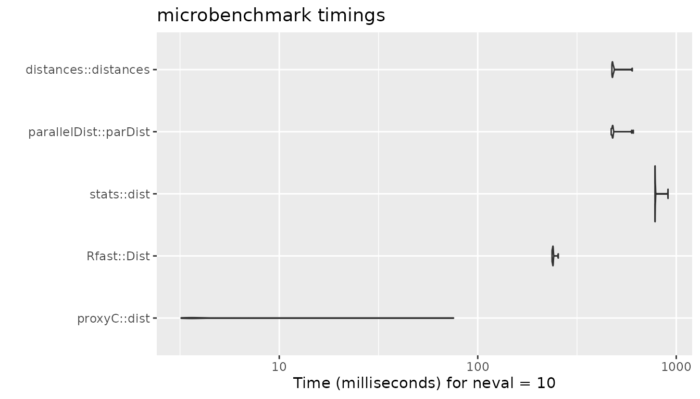
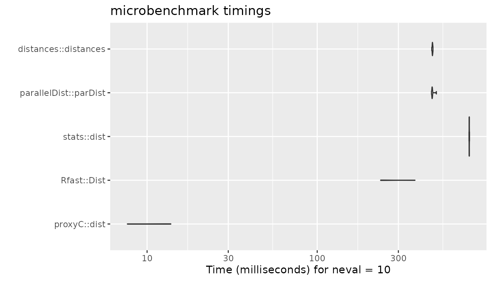
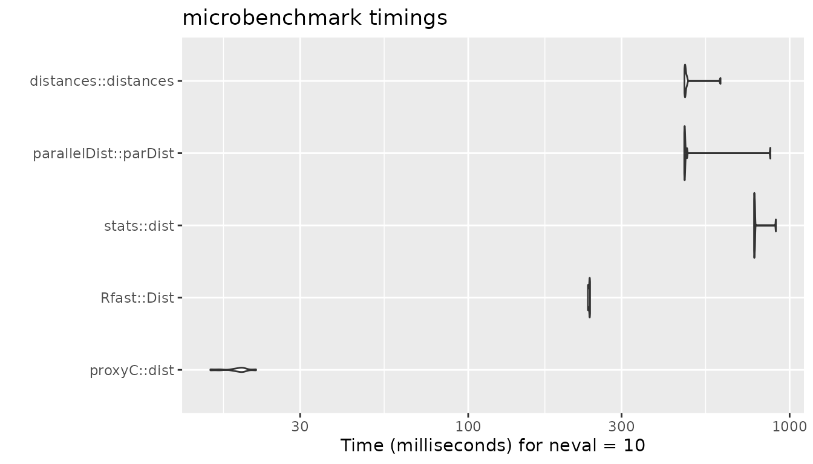
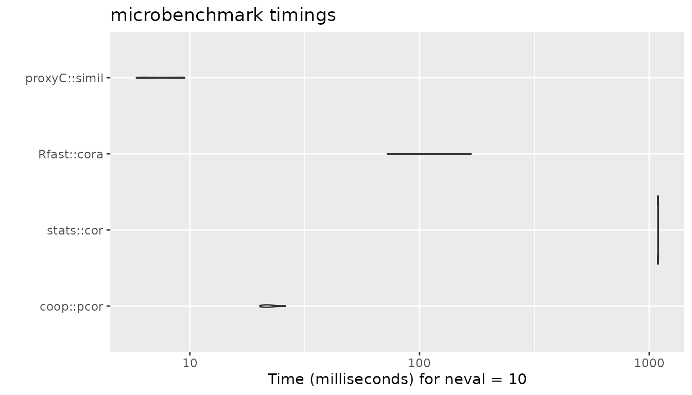
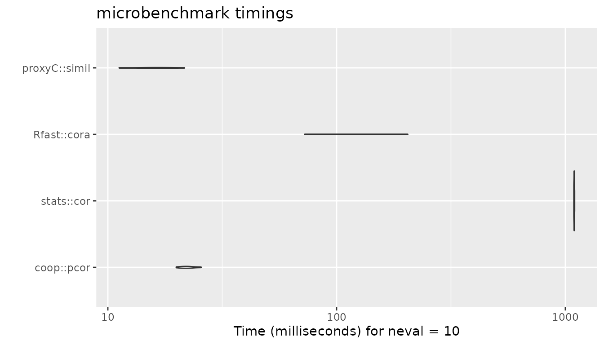

Comparison of Execution Times
Robrecht Cannoodt
2025-04-24
Source:vignettes/articles/timings.Rmd
timings.RmdproxyC is optimized for computing proximity between rows or columns of large sparse matrices.
In this vignette, we compare the execution times of proxyC with other R packages for a variable sparsity level.
Euclidean Distance
library(Matrix)
library(microbenchmark)
library(ggplot2)
n_rows <- 1000L
n_cols <- 1000L
# helper function to compute timings
compute_timings_for_euclidean <- function(
n_rows = 1000L,
n_cols = 1000L,
density = 0.1,
times = 10L
) {
sparse_mat <- rsparsematrix(n_rows, n_cols, density)
dense_mat <- as.matrix(sparse_mat)
microbenchmark(
# Disabled due to long execution times
# "proxy::dist" = proxy::dist(dense_mat, method = "euclidean", diag = TRUE),
"proxyC::dist" = proxyC::dist(sparse_mat, method = "euclidean", diag = TRUE),
"Rfast::Dist" = Rfast::Dist(dense_mat, method = "euclidean"),
"stats::dist" = dist(dense_mat, method = "euclidean"),
"parallelDist::parDist" = parallelDist::parDist(dense_mat, method = "euclidean"),
# Force conversion to matrix because distances::distances uses lazy evaluation
"distances::distances" = as.matrix(distances::distances(dense_mat)),
times = times
)
}1000 rows, 1000 columns, 95% sparsity
bm <- compute_timings_for_euclidean(n_rows = n_rows, n_cols = n_cols, density = 0.05)
autoplot(bm)
1000 rows, 1000 columns, 50% sparsity
bm <- compute_timings_for_euclidean(n_rows = n_rows, n_cols = n_cols, density = 0.5)
autoplot(bm)
1000 rows, 1000 columns, 5% sparsity
bm <- compute_timings_for_euclidean(n_rows = n_rows, n_cols = n_cols, density = 0.95)
autoplot(bm)
Pearson Correlation
n_rows <- 1000L
n_cols <- 1000L
# helper function to compute timings
compute_timings_for_correlation <- function(
n_rows = 1000L,
n_cols = 1000L,
density = 0.1,
times = 10L
) {
sparse_mat <- rsparsematrix(n_rows, n_cols, density)
dense_mat <- as.matrix(sparse_mat)
microbenchmark(
"coop::pcor" = coop::pcor(dense_mat),
"stats::cor" = cor(dense_mat, method = "pearson"),
"Rfast::cora" = Rfast::cora(dense_mat, large = TRUE),
# Disabled due to long execution times
# "proxy::simil" = proxy::simil(dense_mat, margin = 2, method = "correlation", diag = TRUE),
"proxyC::simil" = proxyC::simil(sparse_mat, margin = 2, method = "correlation", diag = TRUE),
times = times
)
}1000 rows, 1000 columns, 95% sparsity
bm <- compute_timings_for_correlation(n_rows = n_rows, n_cols = n_cols, density = 0.05)
autoplot(bm)
1000 rows, 1000 columns, 50% sparsity
bm <- compute_timings_for_correlation(n_rows = n_rows, n_cols = n_cols, density = 0.5)
autoplot(bm)
1000 rows, 1000 columns, 5% sparsity
bm <- compute_timings_for_correlation(n_rows = n_rows, n_cols = n_cols, density = 0.95)
autoplot(bm)